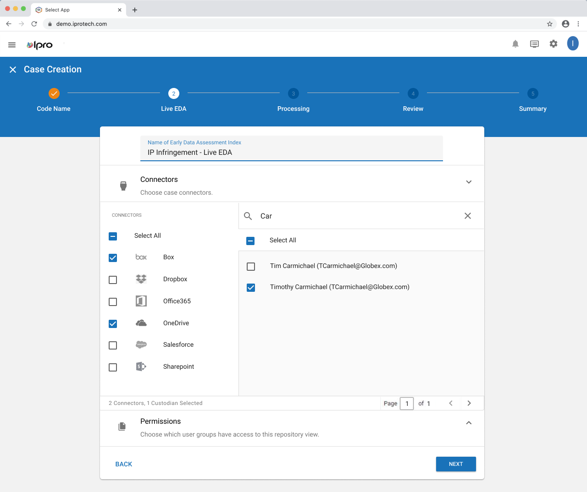
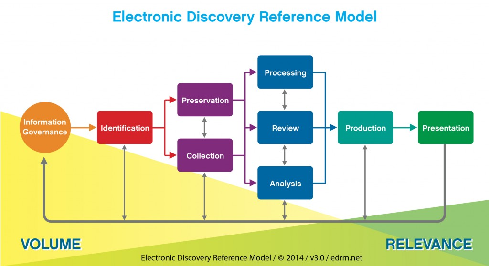
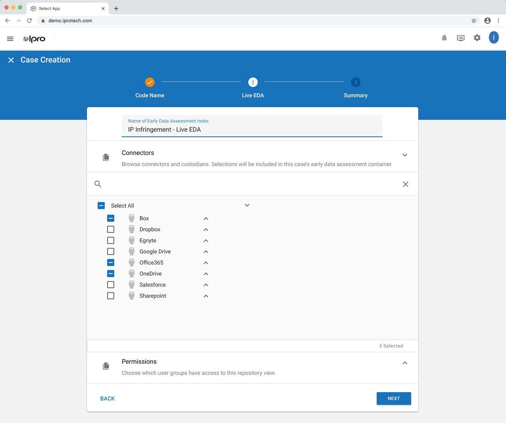
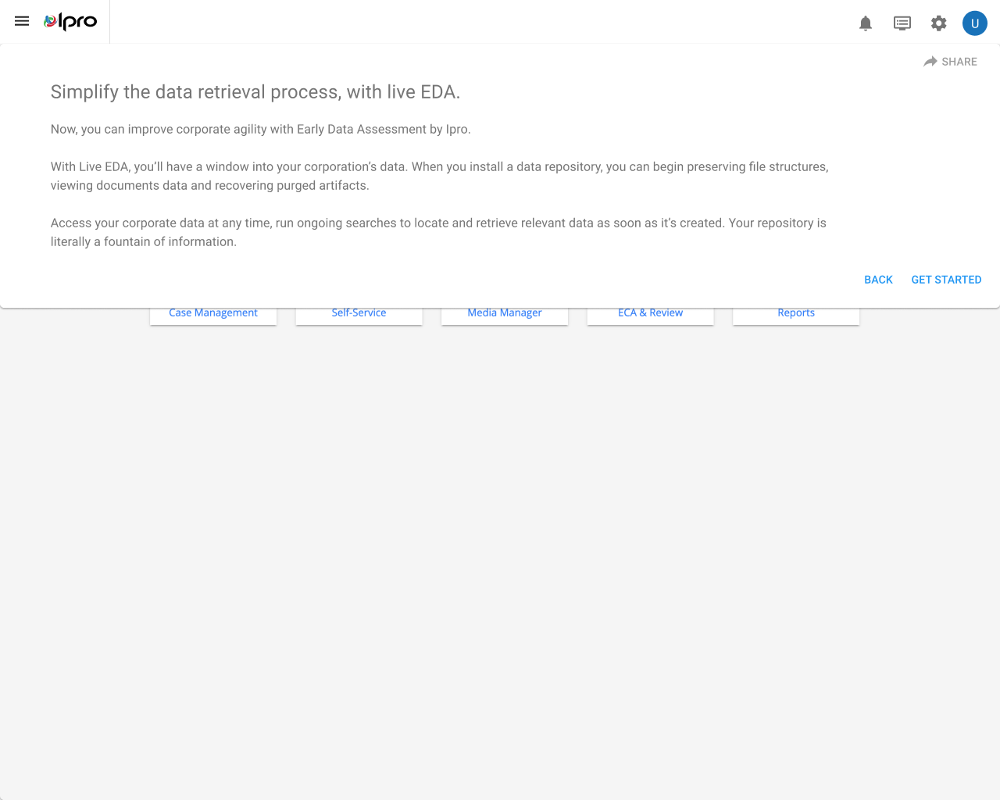
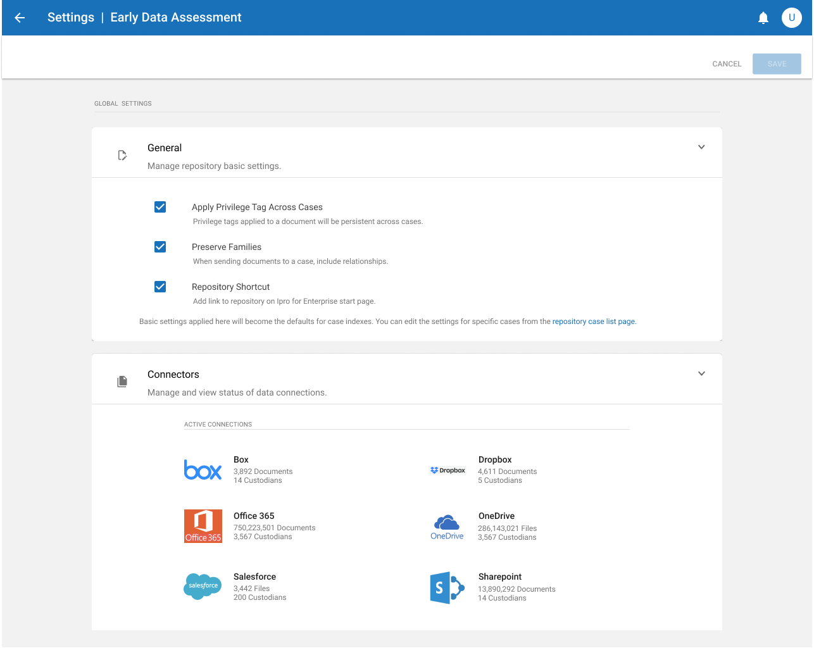
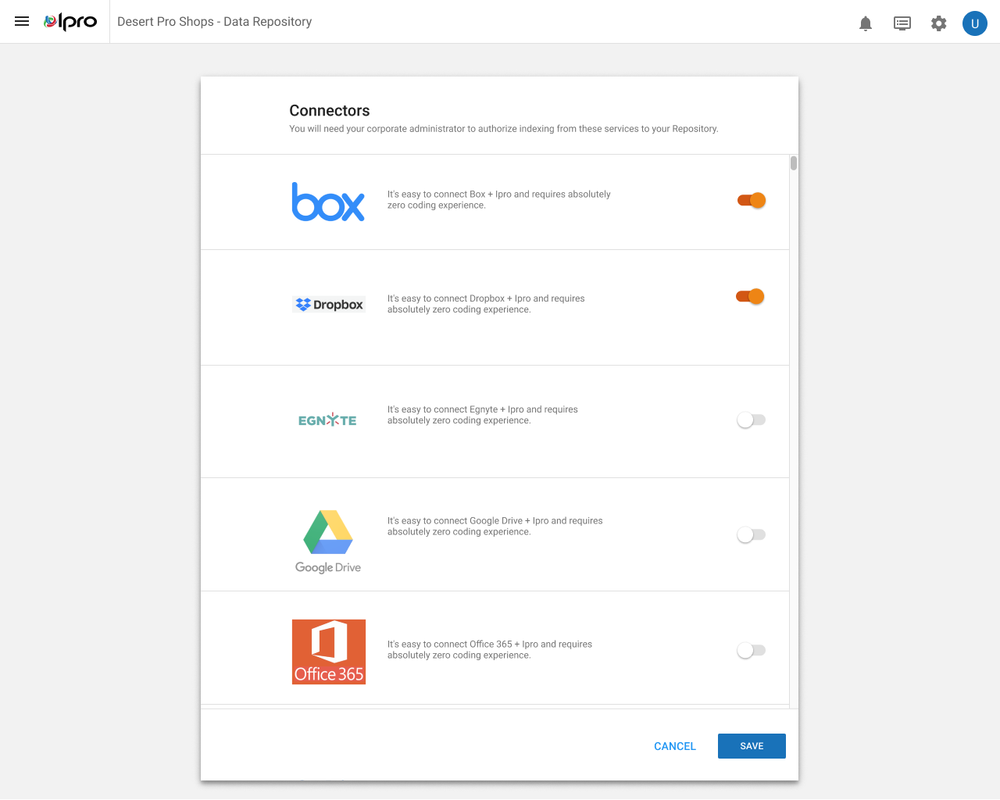

IPRO
Pioneering a searchable document repository that gives legal teams access to case files before traditional processing completes.

The full EDA workflow — from case creation through processing and into review, all in one connected experience.
The Problem
In eDiscovery, legal teams follow the EDRM (Electronic Discovery Reference Model) — a framework for recovering and reviewing digital data in an ethical, repeatable way. The process begins with ingesting large volumes of documents into review software: tens of thousands of files that need to be imaged, OCR'd, and indexed before anyone can look at them.
Depending on the client's resources, this processing could take a week. During that time, the legal team was essentially locked out of their own case materials.
Just under 75% of IPRO clients expected to wait longer than 48 hours to access documents after ingesting them — and most had accepted it as an industry reality.
Research
We spent time with internal service providers and clients who worked large cases to understand what they did while waiting for documents to process. Two patterns emerged:
This second insight was the key. Most corporations store employee and client documents in a cloud that requires user-based permissions. These clouds are often fed by connections to Microsoft, Google, and other enterprise platforms. What if legal software could connect to that same cloud, making every document accessible through the eDiscovery tool?

The EDRM (Electronic Discovery Reference Model) — the industry framework IPRO was working to extend by "moving to the left."
Industry Context
This wasn't just IPRO's idea. At legal conventions across North America, industry leaders like Relativity, Summation, and Microsoft were all signaling plans for pre-discovery tools. The concept of "moving the EDRM to the left" — enabling work before the traditional processing step — was becoming a competitive imperative.
But it was also an extremely sensitive proposition. Legal teams needed absolute confidence in the security and permissioning of any repository that touched their case documents. Privacy concerns, chain-of-custody requirements, and client trust all had to be addressed before a single document could surface through a new pathway.
Approach
My team wrote targeted research questions to understand what it would take for clients to trust a document repository built into their eDiscovery tool. We needed to learn not just what features they wanted, but what guarantees they'd require — and what they'd need to prove to their own clients about the security of the solution.
This was as much a product strategy challenge as a design challenge. The UI had to communicate security and control at every step, because in this domain, confidence in the tool is inseparable from the tool's usefulness.

Case creation — the starting point for every new investigation in the EDA workflow.

Repository entry point — explaining the value and security of the document repository.

Repository settings — granular controls for security, permissions, and connection management.

Validation success — confirming to users that their repository connection is secure and working.